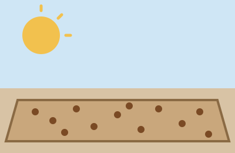
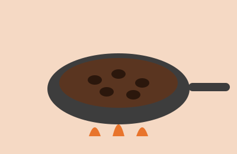

Galería: del grano a la taza
Cada imagen muestra una etapa del proceso. Pasa el mouse sobre ellas para verlas de cerca.






Del cultivo colombiano a tu taza
Cada imagen muestra una etapa del proceso. Pasa el mouse sobre ellas para verlas de cerca.

